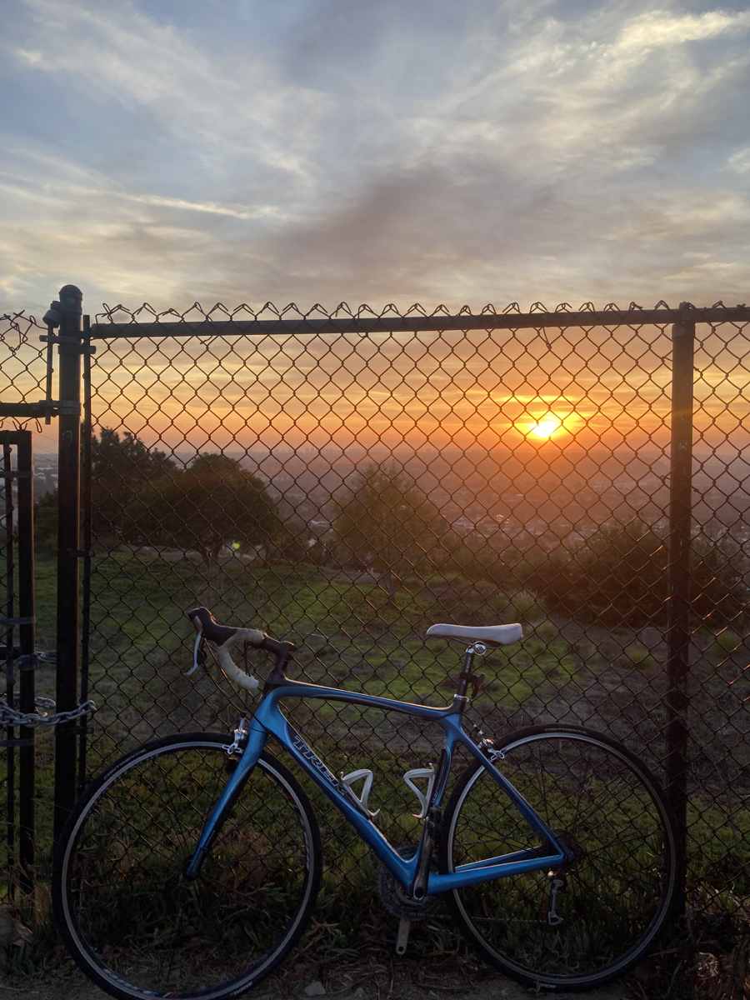
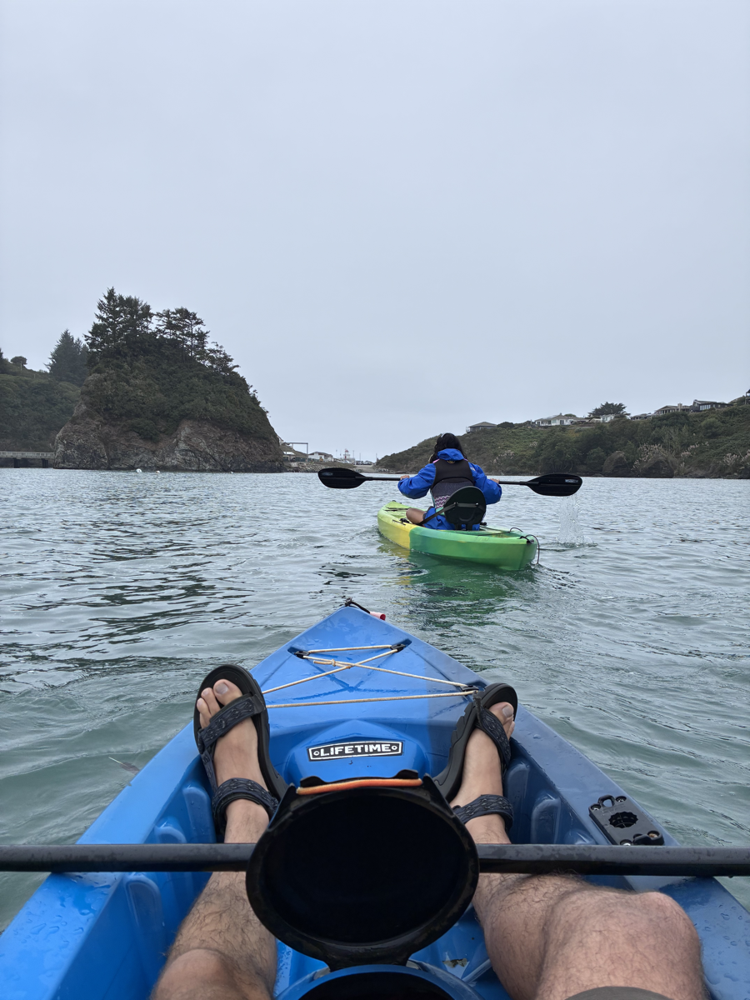

Background
About me
Data scientist and spatial analyst specializing in supply chain analytics, logistics optimization, and economic modeling.
Who I am
I’m Benjamin Lab, an Economics major at Cal Poly Humboldt with a concentration in Data Science and GIS. I specialize in applied quantitative analysis—combining econometric methods, machine learning, and spatial modeling to solve supply chain, logistics, and economic problems.
Experience
- Ix — Founding Data Scientist.
- Data Science Club — President. Lead workshops on Python, SQL, GitHub, visualization, and machine learning; coordinate interdisciplinary projects with campus and community partners.
- GIS & Research Internships. Built interactive maps and analytics dashboards for the Humboldt County Economic Development Department and the Institutional Research office.
Education
B.S. Economics, Concentration in Data Science
Cal Poly Humboldt – Arcata, California
Technical skills
- Python · pandas · NumPy · scikit-learn
- Supply chain optimization · OR-Tools · NetworkX
- Time series forecasting · Prophet · statsmodels
- Spatial analysis · GeoPandas · ArcGIS · QGIS
- SQL · database design · data pipelines
- Machine learning · regression · classification
- Visualization · Matplotlib · Seaborn · Tableau · Folium
- Econometrics · spatial regression · panel data
Outside the work
In my free time, I enjoy riding my bike and exploring the natural beauty California has to offer — whether that's through backpacking, rock climbing, or kayaking. I find time outdoors to be a great way to clear the mind of the stressors that come with modern life, and try to get outside as much as I can.

